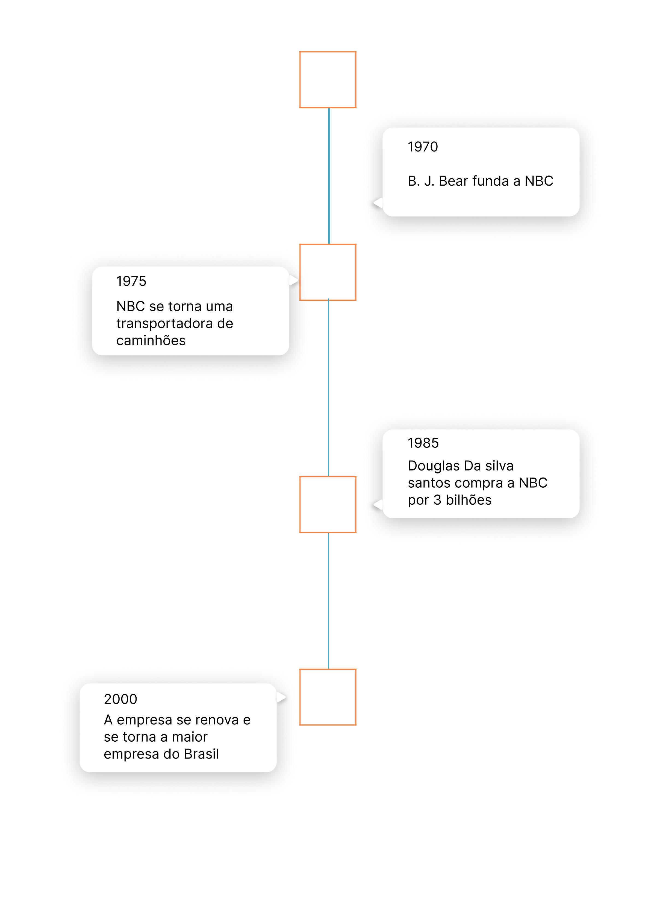

Quem Somos
A Truck Away é uma Empresa de transporte criada em 1970 por B. J. Mckay, e adquirida pelo atual dono em 1985. Entretanto a empresa sofreu diversas alterações após a compra, antes focada em serviços de transporte de produtos agrículas com caminhões, Douglas tornou-a na maior empresa do Brasil, oferencendo serviços na área de transporte de diversos produtos, incluindo caminhões.
